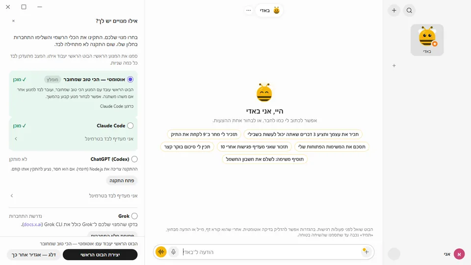

פשוט
לא צריך להיות מפתחים
בלי קובצי הגדרות, בלי שרת ובלי קוד. כוורת מובילה אתכם בהתקנה על המסך, ומשם פשוט מדברים איתה.
- לחיצה אחת מתקינה את המנוע. ב־Windows כוורת מפעילה בשבילכם את ההתקנה הרשמית ומראה את ההתקדמות.
- באדי בונה לכם צוות. מבקשים בוט שעוקב אחרי מחירים או מסכם את המיילים, ובאדי יוצר אותו, בוחר מנוע ומסביר מה הוא יעשה.
- אפליקציות כשצריך. כשמשימה צריכה את המייל או היומן, הבוט מציג כרטיס חיבור בתוך השיחה.
- משהו לא עובד? בהגדרות, "בדוק שהכל עובד" מוצא את הבעיה ולוקח אתכם למסך שמתקן אותה.
